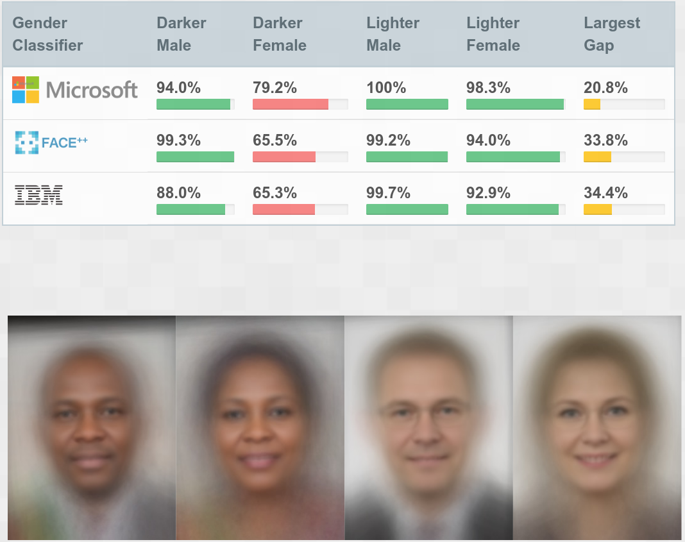

B is for Bias
The term bias is used in a few different contexts within data science. When people mention bias they are typically referring to either the “bias-variance tradeoff” or “unjust bias”. I’ll primarily talk about unjust bias in this blog. If you want to learn about the other kind of bias see “K is for K-fold cross-validation”.
Bias-variance tradeoff
The bias-variance tradeoff refers to tuning models such that they don’t under/overfit your data. A model has high bias if it underfits the training set (e.g. if you are trying to fit a line to non-linear data). A model has high variance if it overfits the training set (i.e. doesn’t generalize well). This could occur if you have a huge non-linear function with a large number of parameters. The bias-variance tradeoff is trying to find a model that minimizes both of these phenomena.
Unjust bias and the importance of having a human in the loop
Machine learning models are useful for helping humans sort through large piles of data. However, it is critical to have a human in the loop in order to validate predictions. It’s particularly important when ML models are used to predict things like university admissions or welfare benefits which have a huge impact on people’s lives. As we talked about in the previous blog, there are two key points to always keep in mind about AI/ML
- It’s not magic
- It’s not perfect
Problems arise when people treat the output of ML models as completely objective (or magic) with no opportunities to overrule these predictions.
Bias refers to a model that is prejudiced in favour of particular categories. Unjust bias occurs when there is a mismatch between the models view of the world and how we think the world should be. There are many reasons that this can happen but two of the big ones are:
- The training data is not truly representative. It may favour certain categories over others leading to better predictions on those categories. As the saying goes: “garbage in, garbage out”.
- The training data is truly representative of past behaviour. However, this might be different than what we want the future behaviour to be.
There are a couple of famous examples of biased models which demonstrate this behaviour.
Facial recognition
Facial recognition tools are increasingly being utilized by organizations such as law enforcement agencies. Model fairness is critical in this case since if a model is biased against particular subgroups it will have a disproportionate impact on the lives of people in that subgroup. Researchers studied 3 commercially available facial recognition tools from Microsoft, IBM, and FACE++ (study is here). The researchers found that the models performed much better on men and also had higher accuracy on lighter skinned people. In the worst case there was a 34.4% difference in accuracy between lighter skinned men compared to darker skinned women. This shows when the training data does not accurately represent all subgroups the result is a biased model.

Amazon’s hiring model
Like many companies, Amazon receives huge numbers of applicants and sorting through these applications is incredibly time intensive. They had a historical set of applications and know which of those candidates were hired. So, they developed a machine learning model to sort through the applications and rank the candidates in terms of their likelihood to be hired. However, this essentially turned into a gender detection model since the vast majority of their previous hires were men. For example, the model would penalize resumes which included the word “women’s”. This is a case where a model can make accurate predictions based on historical data, however this does not match with how hiring should be done. Despite the fact that Amazon scrapped this model, they are far from the only company who would like to automate portions of their hiring process. Creating a fair and unbiased method of doing so that is interpretable is still an open research question. You should be suspicious of anyone who claims to have solved this problem.

How can we fix this?
It is important to note that humans are also biased. They can grade using different criteria if they get grumpy or tired. The appeal of using ML models is that they are much cheaper than humans and can scale much better. If left unchecked, this just means that biased decisions are made at a much larger scale than what was done previously. The best approach is to use a mixture of ML models while keeping a human in the loop. This means providing a way for people to appeal decisions made by an ML model (such as university/college admissions) and allowing a human to override the decision. As researchers, something to keep in mind is that the users of these algorithms may not understand probabilities/confidence intervals. Even if they do understand these concepts they may not feel comfortable overruling the ML model.
Creating models that are fair and interpretable is still an active area of research. This is an incredibly complex and nuanced topic but it is important to be aware of it. Later on, I will write a blog about the different techniques you can use to interpret ML models to try and gain insight into how they are making decisions.